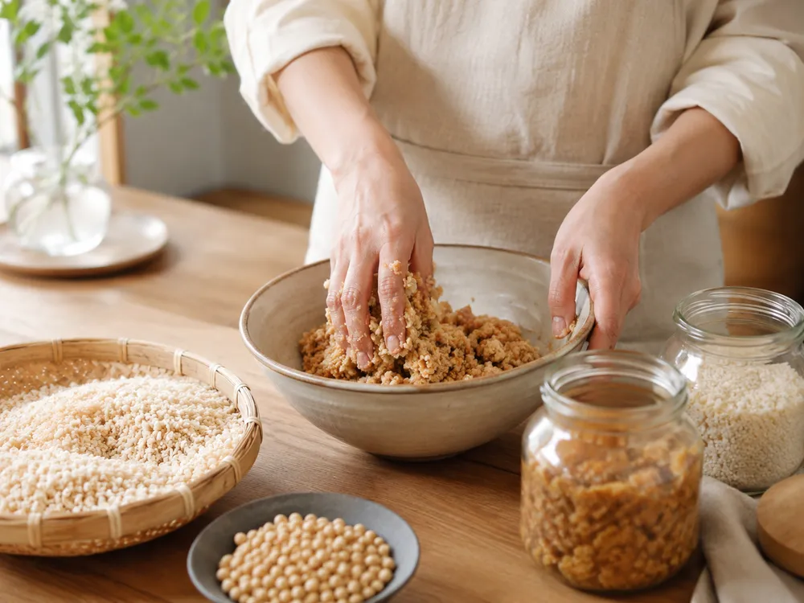

発酵ごはんレッスン
塩麹、醤油麹、甘酒などを使った、日々の食卓に取り入れやすい発酵ごはんのレッスンです。
麹や発酵調味料を取り入れた、
日々のごはんづくりをお伝えしています。

Aboutわたしについて
発酵ごはん講師 / 食育アドバイザー
家族の食卓を支える中で出会った、麹や発酵調味料のある暮らし。いつものごはんに少し取り入れるだけで、料理が楽しくなったり、季節を感じられたりすることに魅力を感じるようになりました。
現在は、味噌づくりや塩麹づくり、発酵調味料を使ったごはんのレッスンを中心に、無理なく続けられる食の楽しみをお伝えしています。
保有資格
活動
Activity活動内容
塩麹、醤油麹、甘酒などを使った、日々の食卓に取り入れやすい発酵ごはんのレッスンです。

味噌づくりや発酵調味料づくりなど、季節に合わせた発酵の楽しみ方をお伝えしています。
発酵食品や旬の食材を、毎日のごはんに無理なく取り入れるためのヒントをご提案します。
Contactお問い合わせ
レッスンやワークショップについてのご質問は、
Instagramまたはメールよりお気軽にご連絡ください。